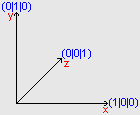

S3DR_Draw3D()
Syntax
S3DR_Draw3D(X1.f,Y1.f,Z1.f,X2.f,Y2.f,Z2.f,X3.f,Y3.f,Z3.f,X4.f,Y4.f,Z4.f)
Description
Draws the selected Texture in 3D-Space.
This command must be inside of a S3DR_BeginReal3D()...S3DR_EndReal3D() block.
If the function fails, it returns nonzero.
Supported OS
Windows